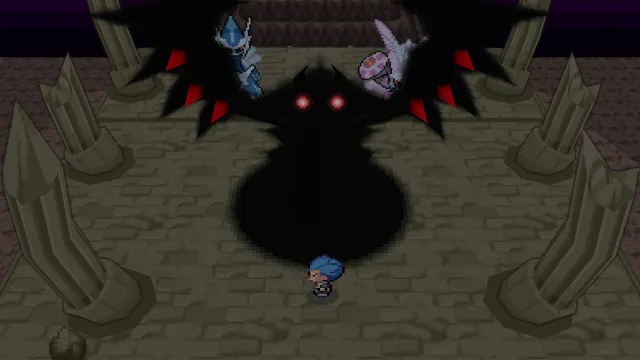
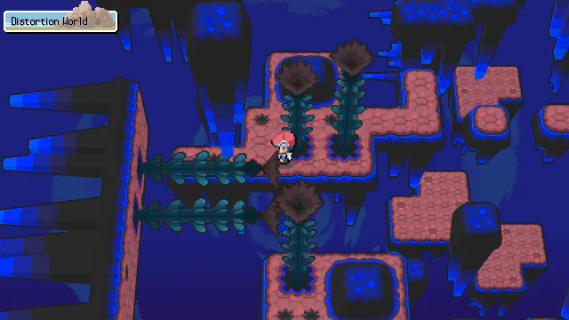
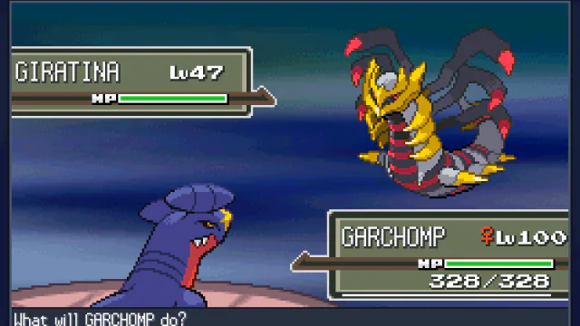
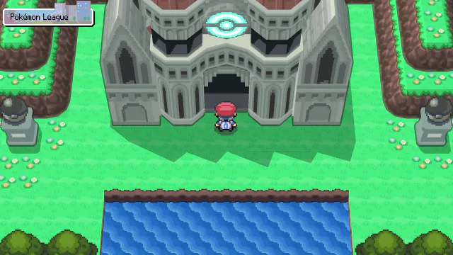
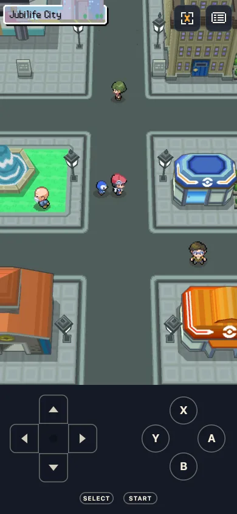
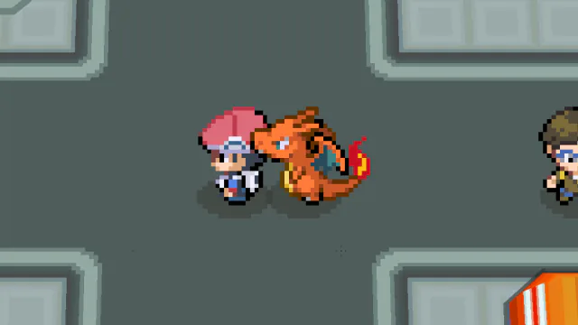

The story
The whole game, to the credits
Spear Pillar 
Distortion World 
Giratina 
Pokémon League 
BetaPlayable now, in your browser
Pokémon Platinum, rebuilt from the ground up. A new engine plays the game from your own ROM, on desktop, tablet and phone (iPhone and Android).
Runs right in your browser. No emulator, no download.
Free and open source. Your ROM never leaves your device.
Beta: playable to the credits, still being playtested. Expect rough edges, and export your saves. Report bugs on Discord

The engine
OpenSinnoh doesn't emulate a DS or run the game's code. It's a new engine, written for the browser, that reimplements Platinum's systems. Your ROM is read once, on your device, to import the maps, models, sprites, text and music. Then the engine plays the game itself, in 3D at your screen's resolution.

Have your own HeartGold or SoulSilver ROM? Add it for following Pokémon, and more content later.
Next: mods and new content on the same engine. Not ready yet.
The story




How it works
Go to play.opensinnoh.com.
The Pokémon Platinum file you made from your own cartridge.
The import takes about 15 seconds. After that it starts offline.
We never host, receive or see your ROM. Nothing is uploaded, and OpenSinnoh ships no Nintendo code, art, text or music.
The engine is MIT-licensed. Read the code, report issues and contribute on GitHub.
Follow along, report bugs and see what's next on Discord.
FAQ
OpenSinnoh contains no Nintendo content. You need to own the game and make the ROM from your own cartridge; the rules on backups differ by country. We don't link to ROMs.
Pokémon Platinum, US version. HeartGold or SoulSilver (US) is an optional add-on.
Not yet: it's in beta. The story plays to the credits; the post-game is in progress, and it's still being playtested, so expect rough edges and export your saves. Report bugs on Discord.
In your browser, on your device. Export a save file from Options › Data to back it up or move it.
No account and no ads. We count visits anonymously, without cookies. Error reports only if you allow them.